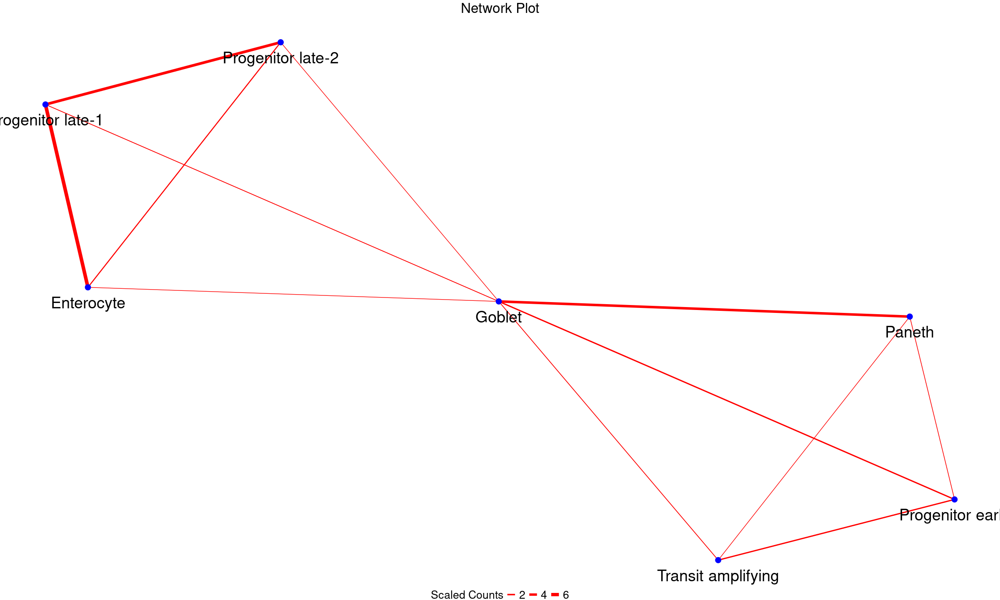

An R package for the prediction and identification of multiplets from scRNAseq datasets to infer physical cell-cell interaction networks. Multiplets occur naturally in conventional scRNAseq due to incomplete dissociation during library preparation. They represent cells which are physically connected and interacting in tissues which become sequenced together as they remain unseperated. ULM utilizes a signature-based approach where univariate linear models are fitted over each barcode in a scRNAseq data to assign signature scores. Barcodes are then classified as singlets or multiplets based on their signature scores. Multiplets are those barcodes or cells that are enriched in two or more cell type-specific gene signatures.

Installation
You can install the development version of ULM from GitHub with:
if (!requireNamespace("devtools", quietly = TRUE)) {
install.packages("devtools")
}
library(devtools)
devtools::install_github("Sidex71/ULM")A full guide on the usage of ULM can be found in the package website, vignettes, or the full tutorials (see below)
Dependencies
This package depends on Seurat (>= 3.0.0), decoupleR, tidyverse, dplyr, stringr, igraph, ggraph, tidygraph, ggplot2, magrittr, tibble. All required packages might be automatically installed alongside the ULM package if not already installed.
Example
This is a quick example which shows how to infer physical cell-cell interaction network from a scRNAseq data:
library(ULM)
#####load dataset
data("int_singData") ##int_singData is a preprocessed scRNAseq seurat object with a Cell_Type column containing cell annotations.
##generate signatures
set.seed(101324)
int_sig <- ULM::GetSignature(int_singData, ident_col = int_singData$Cell_Type, n = 100)
#> using the specified seurat ident to generate signatures
#> Calculating cluster Progenitor early
#> Warning: The `slot` argument of `GetAssayData()` is deprecated as of SeuratObject 5.0.0.
#> ℹ Please use the `layer` argument instead.
#> ℹ The deprecated feature was likely used in the Seurat package.
#> Please report the issue at <https://github.com/satijalab/seurat/issues>.
#> This warning is displayed once every 8 hours.
#> Call `lifecycle::last_lifecycle_warnings()` to see where this warning was
#> generated.
#> Warning: `PackageCheck()` was deprecated in SeuratObject 5.0.0.
#> ℹ Please use `rlang::check_installed()` instead.
#> ℹ The deprecated feature was likely used in the Seurat package.
#> Please report the issue at <https://github.com/satijalab/seurat/issues>.
#> This warning is displayed once every 8 hours.
#> Call `lifecycle::last_lifecycle_warnings()` to see where this warning was
#> generated.
#> Calculating cluster Progenitor late-1
#> Calculating cluster Transit amplifying
#> Calculating cluster Progenitor late-2
#> Calculating cluster Goblet
#> Calculating cluster Stem
#> Calculating cluster Enterocyte
#> Calculating cluster Paneth
#> Calculating cluster Enteroendocrine
#> Calculating cluster Tuft
###score cells and assign labels
my_scores <- GetCellScores(seurat_obj = int_singData, signatures = int_sig, assay = 'RNA', layer = 'data')
my_assign <- GetCellAssignments(score_data = my_scores, cut_off = 1, p_val = 0.05)
int_singData <- AddMetaObject(int_singData, cell_class_df = my_assign)
#####filter multiplets
my_mult_filt <- FilterMultiplet(int_singData, minCells = 2, minFreq = 10)
#> Warning: Removing 1929 cells missing data for vars requested
multSummaryFilt <- my_mult_filt$multSummaryFilt
###plot network
my_node_df <- GetNodeDF(mat = multSummaryFilt)
PlotNetwork(my_node_df)
A more comprehensive guide on the usage of the ULM package can be found in the full tutorials below (check also the package vignettes or web article)
#########################################################################################Full Tutorials- A complete guide on the ULM Package
Introduction
ULM is a package to reconstruct physical cell-cell interaction networks from conventional scRNAseq datasets using signature-based approach. Basically, ULM utilises univariate linear models to identify multiplets (mostly doublets) which potentially represent undissociated cell fractions that are physically connected cell neighbors in tissue.
We first load the ULM package
In this vignette, we first test ULM on a scRNAseq dataset of small intestinal tissue (Andrews et al., 2021, pubmed: GSE175664). The preprocessed scRNAseq can be loaded by running this code:
data("int_singData")
int_singData
#> An object of class Seurat
#> 15610 features across 5279 samples within 1 assay
#> Active assay: RNA (15610 features, 2000 variable features)
#> 3 layers present: counts, data, scale.data
#> 2 dimensional reductions calculated: pca, umapLet us visualise the metadata to see the available cell annotations
head(int_singData@meta.data)
#> orig.ident nCount_RNA nFeature_RNA Cell_Type
#> AAACGAAAGAGGTCGT SeuratProject 6540 2190 Progenitor early
#> AAACGAAAGCCTCCAG SeuratProject 11193 3062 Progenitor late-1
#> AAACGAAAGTTTGGCT SeuratProject 12139 3234 Progenitor early
#> AAACGAACACAAGCTT SeuratProject 12188 3445 Transit amplifying
#> AAACGAAGTCGCTTGG SeuratProject 2493 1112 Progenitor late-2
#> AAACGAAGTCTTACTT SeuratProject 7547 2686 Goblet
#> Source Subject_strain Tissue
#> AAACGAAAGAGGTCGT Small Intestinal Epithelium C57BL/6J Small Intestine
#> AAACGAAAGCCTCCAG Small Intestinal Epithelium C57BL/6J Small Intestine
#> AAACGAAAGTTTGGCT Small Intestinal Epithelium C57BL/6J Small Intestine
#> AAACGAACACAAGCTT Small Intestinal Epithelium C57BL/6J Small Intestine
#> AAACGAAGTCGCTTGG Small Intestinal Epithelium C57BL/6J Small Intestine
#> AAACGAAGTCTTACTT Small Intestinal Epithelium C57BL/6J Small Intestine
#> Pass_QC RNA_snn_res.0.3 seurat_clusters
#> AAACGAAAGAGGTCGT TRUE 2 2
#> AAACGAAAGCCTCCAG TRUE 3 3
#> AAACGAAAGTTTGGCT TRUE 0 0
#> AAACGAACACAAGCTT TRUE 0 0
#> AAACGAAGTCGCTTGG TRUE 6 6
#> AAACGAAGTCTTACTT TRUE 1 1As we can see, there is a ‘Cell_Type’ column that contains cell annotations. Let us visualize the annotated Seurat clusters
library(Seurat)
#> Loading required package: SeuratObject
#> Loading required package: sp
#>
#> Attaching package: 'SeuratObject'
#> The following objects are masked from 'package:base':
#>
#> intersect, t
DimPlot(int_singData, reduction="umap", group.by="Cell_Type", label=TRUE)
#> Warning: `aes_string()` was deprecated in ggplot2 3.0.0.
#> ℹ Please use tidy evaluation idioms with `aes()`.
#> ℹ See also `vignette("ggplot2-in-packages")` for more information.
#> ℹ The deprecated feature was likely used in the Seurat package.
#> Please report the issue at <https://github.com/satijalab/seurat/issues>.
#> This warning is displayed once every 8 hours.
#> Call `lifecycle::last_lifecycle_warnings()` to see where this warning was
#> generated.
Now let us use the ULM pipeline to identify multiplets present in this data and infer physical interaction network.
The first step in the pipeline is to generate cell type-specific gene signatures. This will generate a default of 100 genes that best mark each annotated cell type cluster in the data.
set.seed(101324)
int_sig <- GetSignature(int_singData, ident_col = int_singData$Cell_Type, n = 100)
#> using the specified seurat ident to generate signatures
#> Calculating cluster Progenitor early
#> Calculating cluster Progenitor late-1
#> Calculating cluster Transit amplifying
#> Calculating cluster Progenitor late-2
#> Calculating cluster Goblet
#> Calculating cluster Stem
#> Calculating cluster Enterocyte
#> Calculating cluster Paneth
#> Calculating cluster Enteroendocrine
#> Calculating cluster TuftLet us visualize what the signature table looks like
head(int_sig, 10)
#> # A tibble: 10 × 3
#> # Groups: source [1]
#> source target mor
#> <chr> <chr> <dbl>
#> 1 Progenitor early Ccna1 1
#> 2 Progenitor early Hist1h2br 1
#> 3 Progenitor early BC051077 1
#> 4 Progenitor early Gm10501 1
#> 5 Progenitor early C330021F23Rik 1
#> 6 Progenitor early Cdkn3 1
#> 7 Progenitor early Cdc25c 1
#> 8 Progenitor early Ccnb2 1
#> 9 Progenitor early Cdc20 1
#> 10 Progenitor early Lipg 1The signature table has 3 columns, the source column contains the cell type, the target column contains the genes and the mor column contains the weights.
Next, we score each cell in the scRNseq data for cell signatures by fitting univariate linear models. We will score the signatures on each barcode (cell) in the normalised gene count matrix, found in the layer = ‘data’ (or slot = ‘data’, for older Seurat versions). To use the raw count, set layer = ‘count’ (or slot = ‘count’, for older Seurat versions).
my_scores <- GetCellScores(seurat_obj = int_singData, signatures = int_sig, assay = 'RNA', layer = 'data')NB: If the Seurat object is from older Seurat versions, layers would be absent, in this case please set layer = NULL, slot = ‘data’.
Let us visualize the cell score data frame
head(my_scores, 10)
#> # A tibble: 10 × 5
#> barcode celltype score p_value statistic
#> <chr> <chr> <dbl> <dbl> <chr>
#> 1 AAACGAAAGAGGTCGT Enterocyte -3.20 0.00136 ulm
#> 2 AAACGAAAGCCTCCAG Enterocyte -3.30 0.000974 ulm
#> 3 AAACGAAAGTTTGGCT Enterocyte -3.88 0.000106 ulm
#> 4 AAACGAACACAAGCTT Enterocyte -4.31 0.0000164 ulm
#> 5 AAACGAAGTCGCTTGG Enterocyte -1.22 0.221 ulm
#> 6 AAACGAAGTCTTACTT Enterocyte -4.01 0.0000622 ulm
#> 7 AAACGAAGTTACCCTC Enterocyte -3.00 0.00268 ulm
#> 8 AAACGAATCACCGGTG Enterocyte -4.01 0.0000601 ulm
#> 9 AAACGCTAGAGTCAAT Enterocyte -1.93 0.0535 ulm
#> 10 AAACGCTAGATGAATC Enterocyte -3.71 0.000212 ulmAs seen, the cell score data frame contains the scores of barcodes for each cell signature as well as the p values. Positive scores infer enriched signatures while negative scores infer non-enriched signatures for each barcode.
Next is to label each barcode by cell types based on the signature scores. Cells with one significant signature score will have a single-cell label while cells with more than one significant signature score will have a multi-cell label. Please note that barcodes and cells are used interchangeably.
my_ass <- GetCellAssignments(score_data = my_scores, cut_off = 1, p_val = 0.05)We choose a cut-off of 1 to depict enriched signatures. This means that we considered all negative scores and those below 1 as non-enriched. Ideally, all positive scores should be considered enriched but choosing a cut-off of 1 will increase precision of our cell assignment. However, users may choose to set the cut-off at 0 or higher. Note that there is a trade off between cutoff and cell dropout.
Let us visualize the cell assignment data frame.
head(my_ass, 10)
#> barcode statistic count_ulm celltype_ulm
#> 1 AAAGGTATCGGCTTCT ulm 2 Enterocyte_Progenitor late-1
#> 2 AACAGGGAGAAGTCAT ulm 2 Enterocyte_Progenitor late-1
#> 3 AACCAACCATCAGCAT ulm 2 Enterocyte_Progenitor late-1
#> 4 AACCTGAGTACCGTCG ulm 3 Enterocyte_Paneth_Progenitor late-1
#> 5 AACGAAACAAGCGCAA ulm 2 Enterocyte_Progenitor late-1
#> 6 AACGAAACAGGTCCCA ulm 2 Enterocyte_Progenitor late-1
#> 7 AACGGGAAGTGACACG ulm 2 Enterocyte_Progenitor late-1
#> 8 AACGGGATCCATACTT ulm 2 Enterocyte_Progenitor late-1
#> 9 AACGGGATCGTAGCTA ulm 2 Enterocyte_Progenitor late-1
#> 10 AAGAACAAGTTCTACG ulm 2 Enterocyte_Progenitor late-1
#> avg_pvalue avg_score
#> 1 2.523098e-13 8.319202
#> 2 2.424298e-15 8.761571
#> 3 9.232242e-16 8.127915
#> 4 8.578408e-06 7.990285
#> 5 2.859176e-09 5.994553
#> 6 1.859488e-17 8.907267
#> 7 2.196144e-06 6.576429
#> 8 5.995422e-15 8.042991
#> 9 1.101760e-17 10.222142
#> 10 2.110035e-04 4.999832As we can see, the cell assignment data frame has a dedicated column called “count_ulm” which tells how many cell signatures a given barcode has. For example, a count_ulm value of 2 means that the barcode has a significant score for two different signatures and as such it is a predicted doublet, while a value of 3 represents a predicted triplet. Also, the “celltype_ulm” column contains the specific signatures that a barcode expresses. For example, the first 3 barcodes have count_ulm values of 2 and the associated cell labels are “Enterocyte_Progenitor late-1” as seen in the celltype_ulm column. This means that those barcodes are cells (doublets) that were enriched in dual gene signatures.
Now that we have predicted each barcode in the data and assigned labels to them based on cell type-specific gene sigatures, we can then add the new labels and the associated statistics to the metadata of our Seurat Object. Let us view the metadata once again before we add the predicted labels
head(int_singData@meta.data)
#> orig.ident nCount_RNA nFeature_RNA Cell_Type
#> AAACGAAAGAGGTCGT SeuratProject 6540 2190 Progenitor early
#> AAACGAAAGCCTCCAG SeuratProject 11193 3062 Progenitor late-1
#> AAACGAAAGTTTGGCT SeuratProject 12139 3234 Progenitor early
#> AAACGAACACAAGCTT SeuratProject 12188 3445 Transit amplifying
#> AAACGAAGTCGCTTGG SeuratProject 2493 1112 Progenitor late-2
#> AAACGAAGTCTTACTT SeuratProject 7547 2686 Goblet
#> Source Subject_strain Tissue
#> AAACGAAAGAGGTCGT Small Intestinal Epithelium C57BL/6J Small Intestine
#> AAACGAAAGCCTCCAG Small Intestinal Epithelium C57BL/6J Small Intestine
#> AAACGAAAGTTTGGCT Small Intestinal Epithelium C57BL/6J Small Intestine
#> AAACGAACACAAGCTT Small Intestinal Epithelium C57BL/6J Small Intestine
#> AAACGAAGTCGCTTGG Small Intestinal Epithelium C57BL/6J Small Intestine
#> AAACGAAGTCTTACTT Small Intestinal Epithelium C57BL/6J Small Intestine
#> Pass_QC RNA_snn_res.0.3 seurat_clusters
#> AAACGAAAGAGGTCGT TRUE 2 2
#> AAACGAAAGCCTCCAG TRUE 3 3
#> AAACGAAAGTTTGGCT TRUE 0 0
#> AAACGAACACAAGCTT TRUE 0 0
#> AAACGAAGTCGCTTGG TRUE 6 6
#> AAACGAAGTCTTACTT TRUE 1 1Now let us add the predicted labels and view the metadata.
int_singData <- AddMetaObject(int_singData, cell_class_df = my_ass)
head(int_singData@meta.data)
#> orig.ident nCount_RNA nFeature_RNA Cell_Type
#> AAACGAAAGAGGTCGT SeuratProject 6540 2190 Progenitor early
#> AAACGAAAGCCTCCAG SeuratProject 11193 3062 Progenitor late-1
#> AAACGAAAGTTTGGCT SeuratProject 12139 3234 Progenitor early
#> AAACGAACACAAGCTT SeuratProject 12188 3445 Transit amplifying
#> AAACGAAGTCGCTTGG SeuratProject 2493 1112 Progenitor late-2
#> AAACGAAGTCTTACTT SeuratProject 7547 2686 Goblet
#> Source Subject_strain Tissue
#> AAACGAAAGAGGTCGT Small Intestinal Epithelium C57BL/6J Small Intestine
#> AAACGAAAGCCTCCAG Small Intestinal Epithelium C57BL/6J Small Intestine
#> AAACGAAAGTTTGGCT Small Intestinal Epithelium C57BL/6J Small Intestine
#> AAACGAACACAAGCTT Small Intestinal Epithelium C57BL/6J Small Intestine
#> AAACGAAGTCGCTTGG Small Intestinal Epithelium C57BL/6J Small Intestine
#> AAACGAAGTCTTACTT Small Intestinal Epithelium C57BL/6J Small Intestine
#> Pass_QC RNA_snn_res.0.3 seurat_clusters statistic count_ulm
#> AAACGAAAGAGGTCGT TRUE 2 2 <NA> NA
#> AAACGAAAGCCTCCAG TRUE 3 3 ulm 1
#> AAACGAAAGTTTGGCT TRUE 0 0 <NA> NA
#> AAACGAACACAAGCTT TRUE 0 0 <NA> NA
#> AAACGAAGTCGCTTGG TRUE 6 6 ulm 2
#> AAACGAAGTCTTACTT TRUE 1 1 ulm 1
#> celltype_ulm avg_pvalue avg_score
#> AAACGAAAGAGGTCGT <NA> NA NA
#> AAACGAAAGCCTCCAG Progenitor late-1 1.785378e-04 3.748499
#> AAACGAAAGTTTGGCT <NA> NA NA
#> AAACGAACACAAGCTT <NA> NA NA
#> AAACGAAGTCGCTTGG Progenitor late-1_Progenitor late-2 5.336437e-04 4.889417
#> AAACGAAGTCTTACTT Goblet 6.233197e-06 4.519871Obviously, the statistics, count_ulm, celltype_ulm, avg_pvalue and avg_score columns have now been added to our Seurat Object. The count_ulm and celltype_ulm columns have been explained in the previous section. The avg_score contains the average of the predicted scores for all signatures enriched in a barcode, while the avg_pvalue takes the average of the p values associated with those scores. Since each p value was statistically significant, taking the average will ensure that the final p value remains statistically significant. The average scores and p values are only applicable to multiplets (count_ulm > 2) having multi signature scores, singlets (count_ulm = 1) will retain their single scores and p values. Finally, some barcodes have NAs for the newly added column, this represent barcodes that did not significantly enrich in any signature.
The final steps in the pipeline involve isolating multiplets and plotting physical cell-cell interaction network. Let us isolate the multiplets from our Seurat Object, setting minCells = 2, meaning we want barcodes of doublets and above. Set minCells to 3 if you want triplets and above etc.
my_mult <- GetMultiplet(int_singData, minCells = 2)
#> Warning: Removing 1929 cells missing data for vars requestedThis generates a list containing a multiplet Seurat Object and a multiplet. The multiplet summary shows multiplet types and frequency. Let us show the multiplet summary table.
multSummary <- my_mult$multSummary
multSummary
#> multipletType frequency
#> 1 Enterocyte_Enteroendocrine_Progenitor late-1 1
#> 2 Enterocyte_Goblet_Progenitor late-1 3
#> 3 Enterocyte_Paneth_Progenitor late-1 2
#> 4 Enterocyte_Progenitor late-1 216
#> 5 Enterocyte_Progenitor late-1_Progenitor late-2 12
#> 6 Enteroendocrine_Goblet 3
#> 7 Enteroendocrine_Progenitor early 1
#> 8 Goblet_Paneth 104
#> 9 Goblet_Paneth_Transit amplifying 2
#> 10 Goblet_Paneth_Tuft 1
#> 11 Goblet_Progenitor early 14
#> 12 Goblet_Progenitor early_Transit amplifying 1
#> 13 Goblet_Progenitor late-1 4
#> 14 Goblet_Progenitor late-2 1
#> 15 Goblet_Transit amplifying 21
#> 16 Goblet_Tuft 3
#> 17 Paneth_Progenitor early 3
#> 18 Paneth_Progenitor early_Stem 1
#> 19 Paneth_Progenitor late-1 2
#> 20 Paneth_Transit amplifying 2
#> 21 Progenitor early_Progenitor late-1 9
#> 22 Progenitor early_Progenitor late-1_Transit amplifying 1
#> 23 Progenitor early_Progenitor late-2 1
#> 24 Progenitor early_Stem 4
#> 25 Progenitor early_Stem_Transit amplifying 1
#> 26 Progenitor early_Transit amplifying 148
#> 27 Progenitor late-1_Progenitor late-2 136
#> 28 Progenitor late-1_Transit amplifying 1We can also see the total number of predicted multiplets from the summary table
sum(multSummary$frequency)
#> [1] 698The multiplet Seurat Object is just a typical object that can be utilised for multiplet modeling or any downstream analysis as the user pleases. Let us see the multiplet Seurat Object.
multObj <- my_mult$multObj
multObj
#> An object of class Seurat
#> 15610 features across 698 samples within 1 assay
#> Active assay: RNA (15610 features, 2000 variable features)
#> 3 layers present: counts, data, scale.data
#> 2 dimensional reductions calculated: pca, umapWe can also see the multiplet order from the multiplet object
table(multObj$count_ulm)
#>
#> 2 3
#> 673 25There are 698 multiplets i total, of these, 673 were doublets and 25 are triplets.
As we can observe in the multiplet summary table, some multiplet types (e.g Enterocyte_Paneth_Progenitor.late.1) have a frequency of 1, meaning only one cell (barcode) belong to this multiplet type, occuring only once in the dataset. However, some multiplet types have a frequency well over 100, meaning that these types are found in well over 100 barcodes. To improve confidence, it is imperative to filter the obtained multiplets to discard those that are not found in sufficient number of barcodes. Now let us filter our multiplets to include only those muliplet types that were found in at least 10 barcodes (minFreq = 10).
my_mult_filt <- FilterMultiplet(int_singData, minCells = 2, minFreq = 10)
#> Warning: Removing 1929 cells missing data for vars requestedSimilarly, this returns a list of filtered multiplet summary table and filtered multiplet Seurat Object. The filtered table will now contain only multiplet types with frequency of 10 and above. Also the multiplet types have now reduced from 28 to 6 after filtering.
multSummaryFilt <- my_mult_filt$multSummaryFilt
multSummaryFilt
#> multipletType frequency
#> 4 Enterocyte_Progenitor late-1 216
#> 5 Enterocyte_Progenitor late-1_Progenitor late-2 12
#> 8 Goblet_Paneth 104
#> 11 Goblet_Progenitor early 14
#> 15 Goblet_Transit amplifying 21
#> 26 Progenitor early_Transit amplifying 148
#> 27 Progenitor late-1_Progenitor late-2 136We can similarly explore the filtered multiplet object. Again, this can be used for downstream analysis as a typical scRNAseq data if the user pleases.
multObjFilt <- my_mult_filt$multObjFilt
multObjFilt
#> An object of class Seurat
#> 15610 features across 651 samples within 1 assay
#> Active assay: RNA (15610 features, 2000 variable features)
#> 3 layers present: counts, data, scale.data
#> 2 dimensional reductions calculated: pca, umapFinally, we will plot a cell-cell interaction network from the filtered multiplets. To do this, we need to first decompose the filtered multiplet summary table in to a pairwise node-edge data frame.
my_node_df <- GetNodeDF(mat = multSummaryFilt)Let us view the pairwise node-edge dataframeformed
my_node_df
#> Cell1 Cell2 n_cells
#> 1 Goblet Paneth 104
#> 2 Goblet Progenitor early 14
#> 3 Enterocyte Progenitor late-1 228
#> 4 Enterocyte Progenitor late-2 12
#> 5 Progenitor late-1 Progenitor late-2 148
#> 6 Goblet Transit amplifying 21
#> 7 Progenitor early Transit amplifying 148Finally, we can plot the physical interaction network
PlotNetwork(my_node_df)
Indeed, we see interactions involving progenitors and other intestinal epithelial cells. This is biologically plausible since progenitor cells are known to transition through stages to replace the rapidly old intestinal epithelial cells such as enterocyte, transit amplifying cells and goblet cells.
In the final part of this vignette, we show that it is also possible to use a reference scRNAseq data set to generate signatures which can then be utilised to predict multiplet and depict physical interactions in a different query scRNAseq data of similar tissue of origin. For this purpose, we use the intestinal scRNAseq data above as reference to generate signatures. We will then utilise this to predict multiplets in a query dataset of partially dissociated intestinal scRNAseq data from the same study (Andrews et al., 2021, pubmed: GSE175664). We load query and reference data sets
data("int_singData")
ref_obj <- int_singData
ref_obj
#> An object of class Seurat
#> 15610 features across 5279 samples within 1 assay
#> Active assay: RNA (15610 features, 2000 variable features)
#> 3 layers present: counts, data, scale.data
#> 2 dimensional reductions calculated: pca, umap
data("int_multData")
query_obj <- int_multData
query_obj
#> An object of class Seurat
#> 15615 features across 3671 samples within 1 assay
#> Active assay: RNA (15615 features, 2000 variable features)
#> 3 layers present: counts, data, scale.data
#> 2 dimensional reductions calculated: pca, umapLet us generate signatures from the reference dataset
set.seed(101324)
ref_sig <- GetSignature(ref_obj, ident_col = ref_obj$Cell_Type)
#> using the specified seurat ident to generate signatures
#> Calculating cluster Progenitor early
#> Calculating cluster Progenitor late-1
#> Calculating cluster Transit amplifying
#> Calculating cluster Progenitor late-2
#> Calculating cluster Goblet
#> Calculating cluster Stem
#> Calculating cluster Enterocyte
#> Calculating cluster Paneth
#> Calculating cluster Enteroendocrine
#> Calculating cluster Tuft
head(ref_sig, 10)
#> # A tibble: 10 × 3
#> # Groups: source [1]
#> source target mor
#> <chr> <chr> <dbl>
#> 1 Progenitor early Ccna1 1
#> 2 Progenitor early Hist1h2br 1
#> 3 Progenitor early BC051077 1
#> 4 Progenitor early Gm10501 1
#> 5 Progenitor early C330021F23Rik 1
#> 6 Progenitor early Cdkn3 1
#> 7 Progenitor early Cdc25c 1
#> 8 Progenitor early Ccnb2 1
#> 9 Progenitor early Cdc20 1
#> 10 Progenitor early Lipg 1NB: It is also possible to directly import and utilize a reference signature but this must be formatted to suit the output of the GetSignature() function above. That is, it must be a data frame (or tibble) with 3 columns- source, target and mor, containing the cell type, signatures and weight (=1) respectively.
We then utilize the reference signature to predict multiplets in the query data set and construct a physical cell-cell interaction network.
Getting query cell scores
my_scores <- GetCellScores(seurat_obj = query_obj, signatures = ref_sig, assay = 'RNA', layer = 'data')Assigning cell labels
my_ass <- GetCellAssignments(score_data = my_scores)Adding cell labels to the metadata
lab_query_obj <- AddMetaObject(query_obj, cell_class_df = my_ass)Obtaining predicted multiplets
query_mult <- GetMultiplet(lab_query_obj)
#> Warning: Removing 830 cells missing data for vars requestedMultiplet summary table
query_multSummary <- query_mult$multSummary
query_multSummary
#> multipletType frequency
#> 1 Enterocyte_Enteroendocrine_Progenitor late-1 1
#> 2 Enterocyte_Goblet_Progenitor late-1 9
#> 3 Enterocyte_Goblet_Progenitor late-1_Progenitor late-2 1
#> 4 Enterocyte_Paneth_Progenitor late-1 5
#> 5 Enterocyte_Paneth_Progenitor late-1_Progenitor late-2 1
#> 6 Enterocyte_Progenitor late-1 256
#> 7 Enterocyte_Progenitor late-1_Progenitor late-2 57
#> 8 Enterocyte_Progenitor late-1_Tuft 2
#> 9 Enteroendocrine_Goblet 1
#> 10 Enteroendocrine_Goblet_Paneth 1
#> 11 Enteroendocrine_Progenitor early 6
#> 12 Enteroendocrine_Progenitor late-1 1
#> 13 Enteroendocrine_Transit amplifying 2
#> 14 Goblet_Paneth 211
#> 15 Goblet_Paneth_Progenitor early 2
#> 16 Goblet_Progenitor early 83
#> 17 Goblet_Progenitor early_Transit amplifying 3
#> 18 Goblet_Progenitor late-1 18
#> 19 Goblet_Progenitor late-1_Progenitor late-2 5
#> 20 Goblet_Progenitor late-2 8
#> 21 Goblet_Transit amplifying 25
#> 22 Paneth_Progenitor early 15
#> 23 Paneth_Progenitor early_Transit amplifying 2
#> 24 Paneth_Progenitor late-1 2
#> 25 Paneth_Progenitor late-1_Progenitor late-2 4
#> 26 Paneth_Stem 4
#> 27 Paneth_Transit amplifying 9
#> 28 Progenitor early_Progenitor late-1 6
#> 29 Progenitor early_Progenitor late-2 1
#> 30 Progenitor early_Transit amplifying 79
#> 31 Progenitor early_Tuft 3
#> 32 Progenitor late-1_Progenitor late-2 174
#> 33 Progenitor late-1_Progenitor late-2_Tuft 2Multiplet order
query_multObj <- query_mult$multObj
query_multObj
#> An object of class Seurat
#> 15615 features across 999 samples within 1 assay
#> Active assay: RNA (15615 features, 2000 variable features)
#> 3 layers present: counts, data, scale.data
#> 2 dimensional reductions calculated: pca, umap
table(query_multObj$count_ulm)
#>
#> 2 3 4
#> 904 93 2Filtering multiplets
query_mult_filt <- FilterMultiplet(lab_query_obj, minFreq = 7)
#> Warning: Removing 830 cells missing data for vars requestedFiltered multiplet summary table
query_multSummaryFilt <- query_mult_filt$multSummaryFilt
query_multSummaryFilt
#> multipletType frequency
#> 2 Enterocyte_Goblet_Progenitor late-1 9
#> 6 Enterocyte_Progenitor late-1 256
#> 7 Enterocyte_Progenitor late-1_Progenitor late-2 57
#> 14 Goblet_Paneth 211
#> 16 Goblet_Progenitor early 83
#> 18 Goblet_Progenitor late-1 18
#> 20 Goblet_Progenitor late-2 8
#> 21 Goblet_Transit amplifying 25
#> 22 Paneth_Progenitor early 15
#> 27 Paneth_Transit amplifying 9
#> 30 Progenitor early_Transit amplifying 79
#> 32 Progenitor late-1_Progenitor late-2 174Generating pairwise node-edge data frame from the filtered multiplet summary table
query_network_df <- GetNodeDF(mat = query_multSummaryFilt)Plotting query cell-cell interaction network
PlotNetwork(query_network_df, node_text_size = 10, legend_text_size = 20, legend_title_size = 20, main_size = 25)
THE END
Reference
Andrews N, Serviss JT, Geyer N, Andersson AB, Dzwonkowska E, Šutevski I, et al. An unsupervised method for physical cell interaction profiling of complex tissues. Nat Methods. 2021;18:912–20.